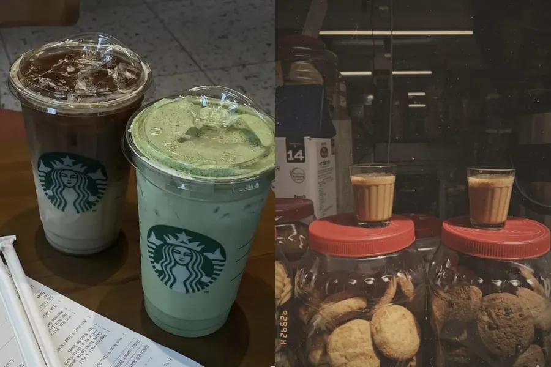
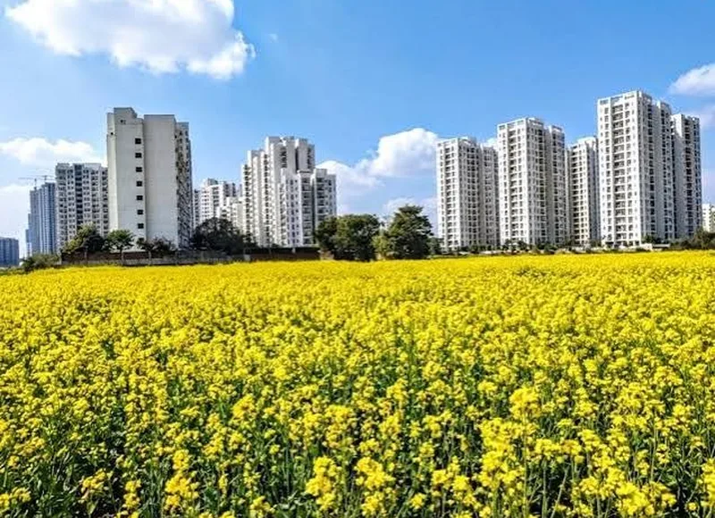
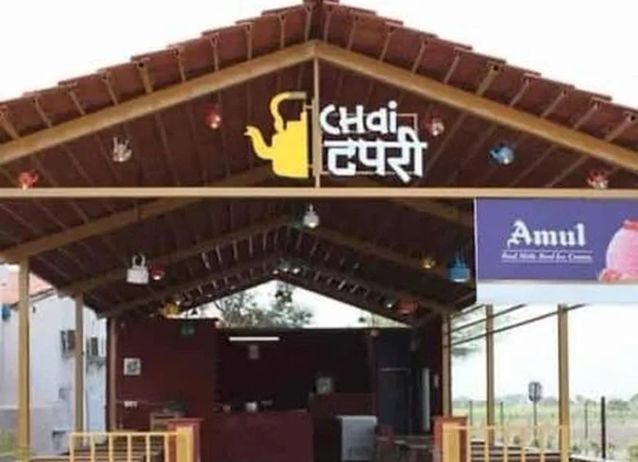
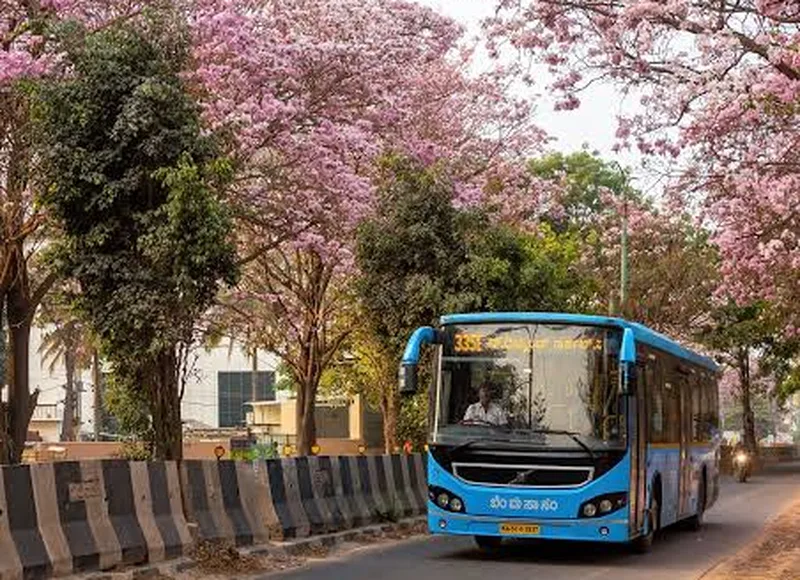
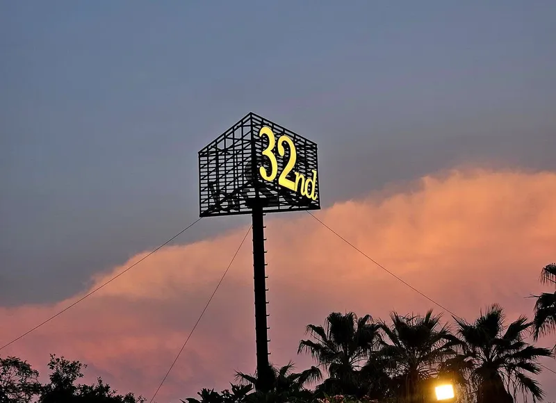
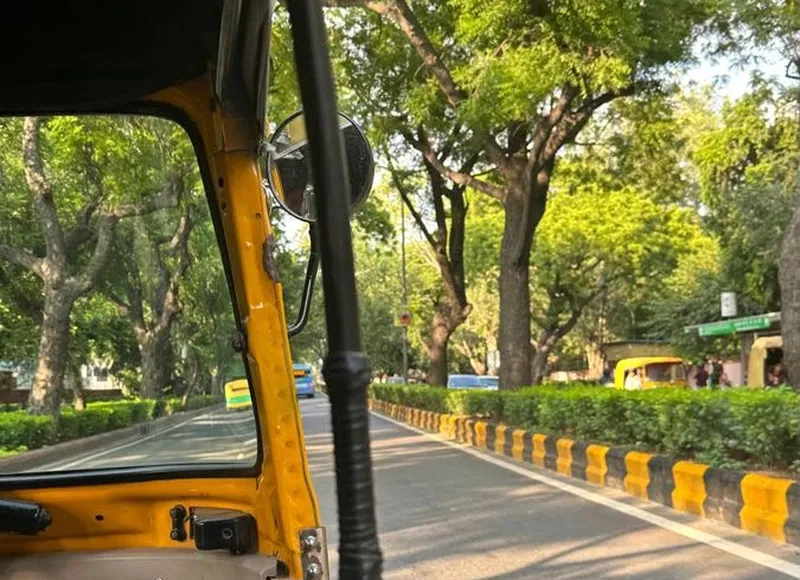
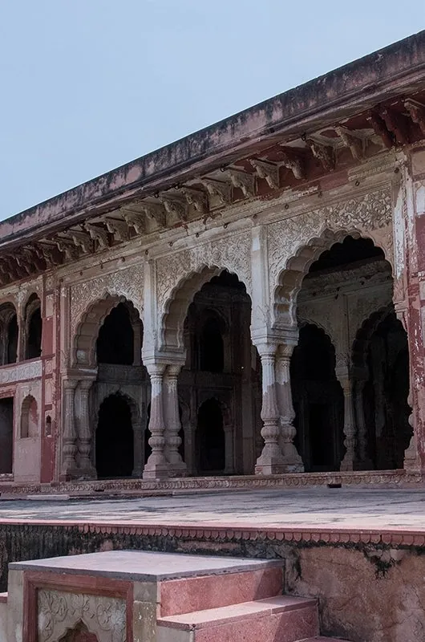
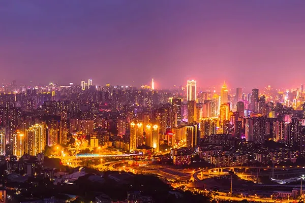

Blog
If the Show Is Over, Who's Still in the Audience?
Kingdom of Dreams was once alive with music and applause, but what remains after the show ends? An eerie silence, empty corridors, and the unsettling feeling that someone is still watching.

Longer reads, straight from us.
grab a chai firstLonger reads from us, hosted on our own blogs.
Kingdom of Dreams was once alive with music and applause, but what remains after the show ends? An eerie silence, empty corridors, and the unsettling feeling that someone is still watching.

From ₹400 coffees to ₹40 momos Gurgaon taught me that it's never about the food, but the people you share it with
In a city full of people chasing something, the best you can find is someone who makes the chase feel a little less lonely.

Before the glass towers and corporate offices, Gurgaon was a city of village lanes, agricultural fields and close-knit communities. As it transforms into a modern urban hub, its traditional roots and local identity remain an essential part of the story.

Fixing the economy, ranting about bosses, and solving life over chai! Gurgaon's tapris serve more than tea. Discover where strangers become familiar faces.
Beyond the towering skyscrapers and endless hustle, Gurgaon has a quieter side waiting to be discovered. Explore the side of the city that reminds us to slow down and simply breathe.

A Saturday café, a seven-year-old with a notebook, and a question I'd never thought to ask my own mother. Sometimes the smallest questions open the biggest doors.

What does Gurgaon sound like? From expressway drives and late-night talks to Friday night parties, Gurgaon ki Dhun finds a city too restless to define with just one song.

I came in thinking you were a place to get through, a place to work in. I'm leaving thinking you're a place with people who have been carrying you around long before the rest of us showed up.

Behind the skyscrapers and corporate hustle lies a city tied to the Mahabharat, from Guru Dronacharya's legacy to ancient temples and local legends.

From Chennai to Gurgaon at 18, a journey filled with fears, friendships and new beginnings. Three years later, Gurgaon is more than just a city - it's home.
From dusty roads and chai tapris to glass towers and buzzing nightlife, Gurgaon is a city of contradictions. It has far more layers than meets the eye.